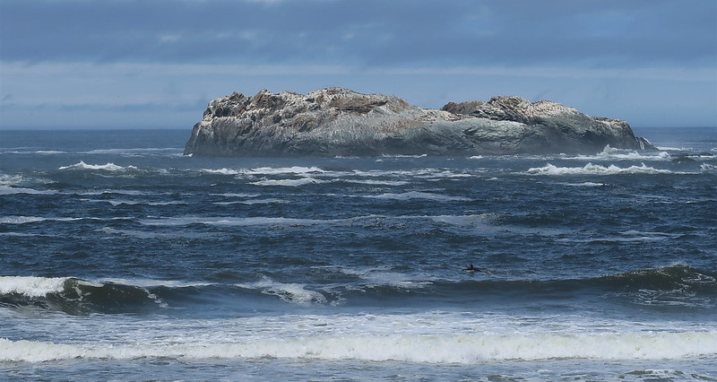

The ocean and the life within
The ocean is a beautiful place, filled with creatures that swim
among the waves. As the planet is covered in almost 80% water you
would assume we would be curious as to what type of creature
inhabits it, but only 5% of the ocean is explored and charted. The
reason we don't explore our oceans is because the immense pressure
in the deep ocean that makes it extremely difficult to explore,
since that environment makes it extremely dangerous for us.

Trinadad,CA